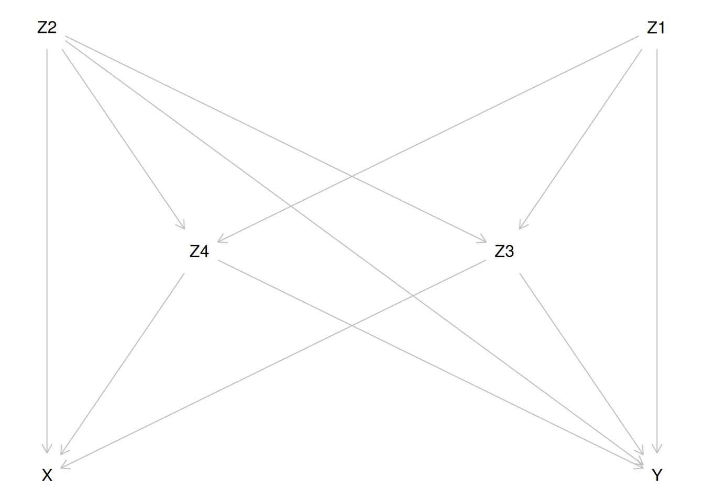

Chapter 14 Causal inference 2: Model-based estimation of causal parameters
Sources of inspiration when creating this practical:
Luque Fernandez, M.A. et al. (2018)
Stat Med 2018;37(16):2530-2546 and
Smith et al. (2022) Stat Med
2022;41(2):407-432.
14.1 Introduction
In this exercise we learn to apply some R tools for estimating interesting causal parameters in the context of an observational study. The statistical methods to be introduced are (a) regression standardization or g-formula, (b) inverse probability weighting (IPW) with propensity scores and (c) double robust (DR) estimation combining approaches (a) and (b).
We illustrate these methods using simulated data.
The exposure variable \(X\) is binary (1/0) and
the outcome variable \(Y\) is binary, too.
The interesting estimands are the causal risk difference (RD) and
the causal risk ratio (RR).
As a background story, we imagine a population of cancer patients, in whom the exposure, and four covariates \(Z = (Z_1, Z_2, Z_3, Z_4)\) plus the assumed marginal distributions of the latter are described in the table below:
| Variable | Description |
|---|---|
| \(X\) | treatment; 1: radiotherapy only, 0: radiotherapy + chemotherapy |
| \(Y\) | death during one year after diagnosis of cancer |
| \(Z_1\) | sex; 0: man, 1: woman; \(Z_1 \sim \text{Bern}(0.5)\) |
| \(Z_2\) | age group 0; young, 1: old; \(Z_2 \sim \text{Bern}(0.65)\) |
| \(Z_3\) | stage of cancer; 4 classes; \(Z_3 \sim \text{DiscUnif}(1, \dots, 4)\) |
| \(Z_4\) | comorbidity score; 5 classes; \(Z_3 \sim \text{DiscUnif}(1, \dots, 5)\) |
For simplicity, covariates \(Z_3\) and \(Z_4\) are treated as continuous variables with linear effects in the models.
- First, load the packages needed in this exercise
- The assumed causal diagram
is drawn using
dagittyand is shown below.
- For a more generic notation, the risk of death, i.e. the probability of \(Y=1\), will be expressed as the expected value of the binary outcome \(Y\), for instance \[ E(Y^{X=x}) = P(Y^{X=x}=1) \quad \text{and} \quad E(Y|X=x, Z=z) = P(Y=1|X=x, Z=z), \] where \(Z\) is the vector of relevant covariates.
The same principle is applied in expressing the conditional probability of being exposed, i.e. that of \(X=1\), given a set of covariate values \(Z=z\): \[ E(X|Z=z) = P(X=1|Z=z). \] The fitted and predicted probabilities of \(Y=1\) are denoted as \(\widehat{Y}\) and \(\widetilde{Y}\), respectively, with pertinent subscripts and/or superscripts.
Both \(X\) and \(Y\) are modelled by logistic regression. The expit-function
or inverse of the logit function is defined:
\(\text{expit}(u) = 1/(1 + e^{-u})\), \(u\in R\). This is equal to the
cumulative distribution function of the standard logistic distribution,
the values of which are returned in R by plogis(u). The R function
that returns values of the logit-function is qlogis().
The true exposure model for the dependence of exposure \(X\) on the covariates \(Z\) is specified as \[ E(X|Z_1 = z_1, \dots, Z_4 = z_4) = \text{expit}(-5 + 0.05z_2 + 0.25z_3 + 0.5z_4 + 0.4z_2z_4) . \] The assumed true outcome model \[ E(Y|X=x, Z_1 = z_1, \dots, Z_4 = z_4) = \text{expit}(-1 + x - 0.1z_1 + 0.35z_2 + 0.25z_3 + 0.20z_4 + 0.15z_2z_4) \] Note that \(X\) does not depend on \(Z_1\), and that in both models there is a product term \(Z_2 Z_4\), the effect of which appears weaker in the outcome model.
14.2 Control of confounding
Based on inspection of the causal diagram, can you provide justification for the claim that variables \(Z_2, Z_3\) and \(Z_4\) form a proper subset of the four covariates, which is sufficient to block all backdoor paths between \(X\) and \(Y\) and thus remove confounding?
Look what dagitty offers for sufficient sets:
Even though we have a sufficient set as claimed above, why it still might be useful to include covariate \(Z_1\), too, when modelling the outcome?
14.3 Generation of target population and true models
- Define two R-functions, which compute the expected values for the exposure and those for the outcome based on the assumed true exposure model and the true outcome model, respectively.
EX <- function(z2, z3, z4) {
plogis(-5 + 0.05 * z2 + 0.25 * z3 + 0.5 * z4 + 0.4 * z2 * z4)
}
EY <- function(x, z1, z2, z3, z4) {
plogis(-1 + x - 0.1 * z1 + 0.35 * z2 + 0.25 * z3 +
0.20 * z4 + 0.15 * z2 * z4)
}- Define a function for generation of data by simulating random values from pertinent probability distributions based on the given assumptions.
genData <- function(N) {
z1 <- rbinom(N, size = 1, prob = 0.5) # Bern(0.5)
z2 <- rbinom(N, size = 1, prob = 0.65) # Bern(0.65)
z3 <- trunc(runif(N, min = 1, max = 5), digits = 0) # DiscUnif(1,4)
z4 <- trunc(runif(N, min = 1, max = 6), digits = 0) # DiscUnif(1,5)
x <- rbinom(N, size = 1, prob = EX(z2, z3, z4))
y <- rbinom(N, size = 1, prob = EY(x, z1, z2, z3, z4))
data.frame(z1, z2, z3, z4, x, y)
}- Generate a data frame
popfor a big target population of 1000000 subjects
14.4 Factual and counterfactual risks - associational and causal contrasts
- Compute the factual risks of death for the two exposure groups \[ E(Y|X=x) = P(Y=1|X=x) = \frac{P(Y=1\ \&\ X=x)}{P(X=x)}, \quad x=0,1, \] in the whole target population, as well as their associational contrasts: risk difference, risk ratio, and odds ratio. Before that define a useful function
Contr <- function(mu1, mu0) {
RD <- mu1 - mu0
RR <- mu1 / mu0
OR <- (mu1 / (1 - mu1)) / (mu0 / (1 - mu0))
return(c(Risk1=mu1, Risk0=mu0, RD = RD, RR = RR, OR = OR))
}
Ey1fact <- with(pop, sum(y == 1 & x == 1) / sum(x == 1))
Ey0fact <- with(pop, sum(y == 1 & x == 0) / sum(x == 0))
round(Contr(Ey1fact, Ey0fact), 4)The one-year mortality is quite high in both groups. – How much bigger is the risk of death of those factually exposed to radiotherapy only as compared with those receiving chemotherapy, too?
Comment: With such a high baseline probability of the outcome the risk ratio cannot become greater than 1/0.628 = 1.59. For relative comparisons one could also consider using survival ratio: SR = (1-_1)/(1-_0) For instance, here the associational survival ratio is \[ \text{SR} = (1-0.8955)/(1-0.6280) = 0.1045/0.372 = 0.2809 = 1/3.56 \]
- Compute now the true counterfactual or potential risks of death \[ E(Y_i^{X_i=x}) = P(Y_i^{X_i=x}=1) = \pi_i^{X_i=x} \] for each individual under the alternative treatments or exposure values \(x=0,1\) with given covariate values,. After that derive the average or overall counterfactual risks \(E(Y^{X=1}) = \pi^1\) and \(E(Y^{X=0}) = \pi^0\) in the population, and finally the true marginal causal contrasts describing the effect of \(X\): \[ \begin{aligned} \text{RD} & = E(Y^{X=1})-E(Y^{X=0}), \qquad \text{RR} = E(Y^{X=1})/E(Y^{X=0}), \\ \text{OR} & = \frac{E(Y^{X=1})/[1 - E(Y^{X=1})]}{E(Y^{X=0})/[1 - E(Y^{X=0})] } \end{aligned} \]
pop <- transform(pop,
EY1.ind = EY(x = 1, z1, z2, z3, z4),
EY0.ind = EY(x = 0, z1, z2, z3, z4)
)
EY1pot <- mean(pop$EY1.ind)
EY0pot <- mean(pop$EY0.ind)
round(Contr(EY1pot, EY0pot), 4)Compare the associational contrasts (e.g. RD=0.2674) computed in item 1 with the causal contrasts here. What do you conclude about the amount of confounding bias in the associational contrasts?
To illustrate what happens in a realistic setting involving some random variability we shall draw a random sample of 5000 patients using systematic sampling. We also compute the estimates of the counterfactual quantities from this sample based on the true models.
n <- 5000
samp <- pop[seq(1,N, by=N/n), ]
str(samp)
EY1pot.samp <- mean(samp$EY1.ind)
EY0pot.samp <- mean(samp$EY0.ind)
round(Contr(EY1pot.samp, EY0pot.samp), 4)The sample estimates of the counterfactual risks and their contrasts based on the true models seem to be not too far from the true values of those estimands.
- Some perspective to the random variability in the estimation of parameters of interest is provided by the numbers of cases and non-casses in the two exposure groups of the sample
stat.table(index=list("Outcome"=factor(y), "Exposure"=factor(x)),
contents=list(count(), percent(y)),
margins=TRUE, data=samp )The group sizes are very different; only 16 % of the patients were exposed to radiotherapy only.
The Statistical precision in any comparison between the exposure groups based on the sample data is very much dominated by the smallest count in this fourfold table, i.e. the number of non-cases among the exposed, which is not very big.
14.5 Outcome modelling and estimation of causal contrasts by g-formula
As the first approach for estimating causal contrasts of interest we apply the method of regression standardization or g-formula. It is based on a hopefully realistic enough model for \(E(Y|X=x, Z=z)\), i.e. how the risk of the outcome is expected to depend on the exposure variable \(X\) and on a sufficient set \(Z\) of confounders. The potential or counterfactual risks \(E(Y^{X=x}), x=0,1\), are marginal expectations of the above quantities, standardized over the joint distribution of the confounders \(Z\) in the target population. \[ E(Y^{X=x}) = E_Z[E(Y|X=x,Z)] = \int E(Y|X=x, Z=z)dF_Z(z), \quad x=0,1. \]
- Assume now a slightly misspecified model
mYfor the outcome, which contains only the main effect terms of the explanatory variables: \[ \pi_i = E(Y_i|X_i=x_i, Z_{i1}=z_{i1}, \dots, Z_{i4}=z_{i4}) = \text{expit}\left(\beta_0 + \delta x_i + \sum_{j=1}^4 \beta_j z_{ij} \right) . \] Fit this model on the data of the whole target population using functionglm()
mY <- glm(y ~ x + z1 + z2 + z3 + z4, family = binomial, data = pop)
round(ci.lin(mY, Exp = TRUE)[, c(1, 5:7)], 4)The point estimates for the intercept, \(X, Z_1\) and \(Z_3\) seem to be reasonably close to the given parameter values in the true model, but those of \(Z_2\) and \(Z_4\) are different. This is because the fitted model ignored the product term \(Z_2 Z_4\).
- For each subject \(i\), compute the fitted individual risk \(\widehat{Y_i}\) (which actually will be needed not until the end of this practical!) as well as the predicted potential (counterfactual) risks \(\widetilde{Y_i}^{X_i=x}\) for both exposure levels \(x=0,1\) separately, keeping the individual values of the \(Z\)-variables as they are observed.
pop$yh <- predict(mY, type = "response") # fitted values
pop$yp1 <- predict(mY, newdata = data.frame(
x = rep(1, N), # x=1
pop[, c("z1", "z2", "z3", "z4")]
), type = "response")
pop$yp0 <- predict(mY, newdata = data.frame(
x = rep(0, N), # x=0
pop[, c("z1", "z2", "z3", "z4")]
), type = "response")- Applying the method of standardization or
g-formula we now compute the point estimates
\[ \widehat{E}_g(Y^{X=x}) =
\frac{1}{n} \sum_{i=1}^n \widetilde{Y}_i^{X_i=x}, \quad x=0,1. \]
of the two counterfactual risks \(E(Y^{X=1}) = \pi^1\) and
\(E(Y^{X=0})=\pi^0\) as well as
those of the marginal causal contrasts.
Comment: The joint distribution of the confounders \(Z\) in the target population is here represented by the actual distribution of the data in that population. Thus, marginal expectations \(E_Z[E(X=x, Z)]\) are obtained by simple computation of the arithmetic means of the individually predicted values \(\widetilde{Y_i}^{X_i=x}\) of the outcome for the two exposure levels.
Compare the estimated contrasts with those obtained from applying the true model (RD = 0.1743) in item 4.4 above. How big is the bias due to misspecification of the outcome model?
Compare in particular the estimate of the marginal OR here with the conditional OR obtained in item 5.1 from the pertinent coefficient in the logistic model. Which one is closer to 1?
- Perform the same calculations using the tools
in package
stdReg2but now on the sample data. (see Sjölander 2016 and Sachs et al 2025). Using functionstandardize_glm()the same logistic model is fitted, and the point estimates together with the confidence intervals for the causal risk difference and causal risk ratio are computed. The results are saved into a list, for which we give the namemY.std.
The main results are shown in four small windows
after applying the basic print method on mY.std
mY.std <- standardize_glm(
formula = y ~ x + z1 + z2 + z3 + z4,
family = "binomial",
data = samp,
values = list(x = 0:1),
contrasts = c("difference", "ratio"),
reference = 0
)
mY.stdThe point estimates seem to be well within a resonable error margin
when compared to those, which you got
by explicit computations for the whole
population data (e.g. RD=0.1828) in the previous item.
(You could also run standardize_glm() with data=pop to convince
yourself that stdReg2' indeed provides the same point estimates as obtained above for the whole population from modelmY`).
In stdReg2, the
standard errors are obtained by the multivariate
delta method built upon M-estimation
(Stefanski & Boos 2002)
and robust sandwich estimator of the
pertinent covariance
matrix. Approximate confidence intervals are derived
from these in the usual way.
14.6 Inverse probability weighting (IPW) by propensity scores
Our next method is based on weighting each individual observation by the inverse of the probability of belonging to that particular exposure group, which was realized, this probability being predicted by the determinants of exposure.
- First, we examine the validity of this approach
by fitting the true model on the whole population data.
To repeat, the model is \[ p_i = E(X_i| Z_{1i} = z_{1i}, \dots, Z_{4i} = z_{4i}) = \text{expit}(\gamma_0 + \gamma_2 z_{2i} + \gamma_3 z_{i3} + \gamma_4 z_{4i} + \gamma_{24} z_{2i}z_{4i}), \quad i=1, \dots N \]
mX <- glm(x ~ z2 + z3 + z4 + z2:z4,
family = binomial(link = logit), data = pop)
round(ci.lin(mX, Exp = TRUE)[, c(1, 5)], 4)The estimated coefficients and ORs are quite close to the true values as given in the introduction section.
- From the fitted model we then extract the propensity scores, i.e. fitted probabilities of belonging to exposure group 1: \(\text{PS}_i = \widehat{p_i}\). We also make a simple comparison of the distribution of the scores between the two groups by common summary measures.
How different are the distributions? Can one judge from these summaries, that they are sufficiently overlapping?
Informative graphical tools for examining overlap and
covariate balance are contained in package PSweight,
and they are introduced in the next section.
- We then compute the inverse probability weights (IPW), also known as inverse probability treatment weights (IPTW): \[ \begin{aligned} W_i & = \frac{1}{\text{PS}_i}, \quad \text{when }\ X_i=1, \\ W_i & = \frac{1}{1-\text{PS}_i}, \quad \text{when }\ X_i=0 . \end{aligned} \] Look at the sum as well as the distribution summary of the weights in the exposure groups. In an ideal situation with a well-specified exposure model the sum of weights should be close to to the population size in both groups.
- Compute now the weighted estimates of the potential or counterfactual risks for both exposure categories \[ \widehat{E}_w(Y^{X = x}) = \frac{ \sum_{i=1}^n {\mathbf 1}_{ \{X_i=x\} } W_i Y_i } {\sum_{i=1}^n {\mathbf 1}_{ \{X_i=x\} }W_i} = \frac{ \sum_{X_i = x} W_i Y_i }{\sum_{X_i=x} W_i}, \quad x = 0,1, \] and their causal contrasts, for instance \[ \widehat{\text{RD}}_{w} = \widehat{E}_w(Y^{X = 1}) - \widehat{E}_w(Y^{X = 0}) = \frac{ \sum_{i=1}^n X_i W_i Y_i }{\sum_{i=1}^n X_i W_i} - \frac{ \sum_{i=1}^n (1-X_i) W_i Y_i }{\sum_{i=1}^n (1-X_i) W_i} \]
EY1pot.w <- sum(pop$x * pop$w * pop$y) / sum(pop$x * pop$w)
EY0pot.w <- sum((1 - pop$x) * pop$w * pop$y) / sum((1 - pop$x) * pop$w)
round(Contr(EY1pot.w, EY0pot.w), 4)These results seem to be practically equal to the true values (e.g. true RD=0.1743).
Comment: If you apply the methods introduced in the
next section but use the whole population data, i.e. putting
data=pop, you would see that the estimates of the
causal contrasts would be the same as obtained here.
14.7 IPW estimation using R package PSweight
We shall now try IPW-estimation with a misspecified model,
such that we include all \(Z\)-variables but none of their
pairwise interactions.
We do this on the sample data only.
In computations we utilize the R package
PSweight
(see PSweight vignette).
- The exposure model is fitted using
glm(), and the weights are obtained using functionSumStat()in packagePSweight:
mX2 <- glm(x ~ z1 + z2 + z3 + z4, family = binomial, data = samp)
round(ci.lin(mX2, Exp = TRUE)[, c(1:2, 5:7)], 3)
psw2 <- SumStat(
ps.formula = mX2$formula, data = samp,
weight = c("IPW", "treated", "overlap")
)Note that apart from weights IPW for the whole population,
other kinds of weights can also be
computed. These are relevant when estimating other
types of causal
contrasts, like “average treatment effect among the treated”
(ATT, see below) and “average treatment effect in the overlap
(or equipoise) population” (ATO).
PSweightincludes some useful tools to examine the properties of the distribution of the propensity scores. First we draw density plots showing, how well the distributions of propensity scores (and 1 - PS, too) are overlapping between the exposure groups – NB. You may get a warning about usage of a
ggplot2aesthetic in the density plot implemented inPSweight, this feature being now outdated in the newest version ofggplot2. Nonetheless, the density plot will after all be drawn, if you go down on the Console window and “Press [enter] to continue”!
Warning: Using `size` aesthetic for lines was deprecated in ggplot2 3.4.0.
ℹ Please use `linewidth` instead.
ℹ The deprecated feature was likely used in the PSweight package.
Please report the issue to the authors.
This warning is displayed once per session.
Call `lifecycle::last_lifecycle_warnings()` to see where this warning was generated.Are the distributions of the propensity scores very different?
- We then create a diagnostic plot to examine the covariate balance between the groups:
In this plot, it would be desirable that the horisontal values of the standardized mean differences for a given type of weights are less than 0.1. – There seems to be some issue with the balance in the estimation of our target parameters based on this exposure model.
- Estimation and reporting of the causal contrasts:
Weights must be
IPWwhen estimating the causal effect generalized to the whole target population. For relative contrasts, the summary method provides the results on the log-scale; therefore \(\exp\)-transformation.
ipw2est <- PSweight(ps.formula = mX2, yname = "y", data = samp,
weight = "IPW")
ipw2est
summary(ipw2est, type="DIF") # risk difference
(logRR.ipw2 <- summary(ipw2est, type = "RR")) # log(risk ratio)
round(exp(logRR.ipw2$estimates[c(1, 4, 5)]), 3) # risk ratio
round(exp(summary(ipw2est, type = "OR")$estimates[c(1, 4, 5)]), 3) # ORComparing these with the previous IPW estimates (e.g. RD=0.1737) as well as the true values (RD=0.1743), there perhaps can be seen indication of some bias due to misspecification. Remember, though, that these estimates are from the sample data with relatively wide error margins.
The standard errors provided by PSweight
are by default based on the
empirical sandwich covariance matrix and application
of delta method as
appropriate. Bootstrapping is also possible but is
computationally very
intensive and is recommended to be used only in relatively small
samples.
14.8 Effect of exposure among those exposed
If we are interested in the causal contrasts describing the effect of exposure among those exposed (like ATE), the relevant factual and counterfactual risks in that subset are conditional on being exposed:
\[ \begin{aligned} \pi^1_1 & = E(Y^{X=1}|X=1) = E(Y|X=1) = \pi_1, \\ \pi^0_1 & = E(Y^{X=0}|X=1) = \sum_{X_i=1} E(Y|X=0, Z=z)P(Z=z|X=1) \end{aligned} \]
We are thus making and “observed vs. expected” comparison, in which the \(z\)-specific risks in the unexposed are weighted by the distribution of \(Z\) in the exposed subset of the target population.
- We shall first estimate these \(z\)-specific
“observed” or factual and “expected” or counterfactual risks
and their contrasts conditional on being exposed from the
slightly misspecified outcome model
mYfitted on the whole population data:
EY1att.g <- mean(subset(pop, x == 1)$yp1)
EY0att.g <- mean(subset(pop, x == 1)$yp0)
round(Contr(EY1att.g, EY0att.g), 4)Compare the results here with those (e.g. RD=0.1828)
meant to describe the overall causal contrasts among the
whole target population from the same model mY.
What do you observe?
What is your guess about the causal effect of exposure among the unexposed; is it bigger or smaller than it is among the exposed or among the whole population?
Incidentally, the true causal contrasts among the exposed based on the true model are similarly obtained from the quantities in item 4.2 above:
EY1att <- mean(subset(pop, x == 1)$EY1.ind)
EY0att <- mean(subset(pop, x == 1)$EY0.ind)
round(Contr(EY1att, EY0att), 4)Compare the estimates in the previous item (e.g. RD\(_1\) = 0.1389) with the true values obtained here. The misspecification of the outcome model implies some bias in these results, too.
- When wishing to estimate
the effect of exposure among the exposed using the IPW
approach, then the weights are \(W_i = 1\) for the exposed and
\(W_i = \text{PS}_i/(1-\text{PS}_i)\) for the unexposed.
We shall again use
PSweightwith sample data but with another choice of weights:
psatt <- PSweight(ps.formula = mX2, yname = "y",
data = samp, weight = "treated")
psatt
round(summary(psatt)$estimates, 4)
round(exp(summary(psatt, type = "RR")$estimates), 3)Compare the results here with those obtained by g-formula in item 8.1 and with the true contrasts above.
14.9 Double robust (DR) estimation
We may try to reduce the bias in the estimation of the target parameters, which would be caused by possible specification error either in the outcome model or in the exposure model using some double robust (DR) approach. These methods combine the principle of regression standardization with that of IPW/propensity scores.
A classical DR method is augmented IPW estimation (AIPW), in which the estimator can be expressed in two alternative ways: either an IPW-corrected g-formula estimator, or an IPW-estimator corrected by standardization.
\[ \begin{aligned} \widehat{E}_a(Y^{X=x}) & = \widehat{E}_g(Y^{X=x}) + \frac{1}{n} \sum_{i=1}^n {\mathbf 1}_{\{X_i=x\}} W_i ( Y_i - \widetilde{Y}_i^{X_i=x} ) \\ & = \widehat{E}_w(Y^{X=x}) + \frac{1}{n} \sum_{i=1}^n ( 1 - {\mathbf 1}_{\{X_i=x\}} W_i ) \widetilde{Y}_i^{X_i=x}. \end{aligned} \]
- We apply the AIPW method first in the whole population by
direct combination of the results that we obtained from the slightly
misspecified outcome model
mYwith those from the well-specified exposure modelmX.
EY1pot.a <- EY1pot.g + mean( 1*(pop$x==1) * pop$w * (pop$y - pop$yp1) )
EY0pot.a <- EY0pot.g + mean( 1*(pop$x==0) * pop$w * (pop$y - pop$yp0) )
round(Contr(EY1pot.a, EY0pot.a), 4)Compare these results with those obtained by g-formula (e.g. RD=0.1828) and by the IPW method (RD=0.1737) as well as with the true values (RD = 0.1743) of the parameters. – Was correction of the g-estimates by IPW successful?
- AIPW-estimates and confidence
intervals for the causal contrasts of interest can
be obtained, for instance, using
PSweight. We will assign the outcome modelmYinto the argumentout.formula. We again combine this slightly misspecified outcome model with the correct exposure modelmXand perform the estimation on the sample data.
aipw.psw <- PSweight(ps.formula = mX, out.formula = mY, yname = "y",
data = samp, weight = "IPW")
aipw.psw
round(summary(aipw.psw)$estimates, 4)
round(exp(summary(aipw.psw, type = "RR")$estimates), 3)The estimates here are quite close to the true values, but the error margins are still relatively wide.
- Alternatively,
stdReg2can also be utilized for double-robust estimation of causal contrasts. It leans, though, on a somewhat different approach. The method developed for the types of outcomes and models covered by generalized linear models (GLM) is known by its initialism IPTW GLM. It is based on weighted maximum likelihood fitting of the outcome model. The weights are inverses of the propensity scores obtained from the pertinent exposure model. Computation of standard errors and confidence intervals uses the influence function approach, which among other things takes into account the fact that weighting is based on estimated propensity scores. – See Gabriel et al 2024 for details of IPTW GLM.
We shall try this method for the sample data with the script below:
dr.std <- standardize_glm_dr(
formula_outcome = y ~ x + z1 + z2 + z3 + z4,
formula_exposure = x ~ z2 + z3 + z4 + z2:z4,
data = samp,
family_outcome = "binomial",
family_exposure = "binomial",
values = list(x = 0:1),
contrasts = c("difference", "ratio"), reference = 0)
dr.stdThe point estimates are not much different from those obtained above when applying AIPW estimation.
14.10 DR estimation with flexible learning algorithms
It may not be easy to specify
a conventional generalized linear models
or even a generalized additive
model for exposure and outcome, which would be
sufficiently realistic, yet not suffering from overfitting.
Modern approaches of statistical learning, a.k.a.
“machine learning” provide tools for flexible modelling,
which may be used to reduce the risk of misspecification,
if thoughtfully applied.
There are a few R packages in which some general
algorithmic approaches for supervised learning
are implemented for estimating causal parameters.
For instance, package AIPW
(see Zhong et al., 2021)
utilizes
several learning algorithms for exposure and outcome modelling
and then performs AIPW estimation of the
parameters of interest coupled with
calculation of confidence intervals. Package tmle
(see Karim and Frank, 2021)
performs same tasks but uses the
targeted maximum likelihood estimation (TMLE) approach
in estimation.
Both AIPW and tmle lean on the
SuperLearner package, which uses multiple learning
algorithms (e.g. GLM, GAM, Random Forest, Recursive Partitioning,
Gradient Boosting, etc.) for constructing
predictions of the counterfactual quantities, and
then creates an optimal weighted average of those models,
a.k.a. an “ensemble”. These algorithms are computationally
highly intensive. Fitting models with only 3 or 4
covariates as in this practical
for our whole target cohort of 1,000,000 subjects
would take hours on an ordinary laptop. With a sample
of 5000 it woul still take several minutes.
14.11 Extra: Computations in the TMLE method
Finally, a few words on, how causal contrasts
are estimated using the TMLE, when we have fitted an outcome model,
like mY, and an exposure model, like mX.
TMLE corrects the estimates obtained from the outcome model by some
elements derived from the
exposure model. The correction, though, is not as
intuitive and transparent as it is in AIPW. See
Schuler and Rose (2017)
for more details.
We show the steps of computation using the data covering the whole target population.
- In the first step we utilize the propensity scores
previously obtained from fitting the correct exposure model
and compute from them the “clever covariates”
H1andH0:
- Then, a working model is fitted for the outcome,
in which the clever
covariates are explanatory variables, but the model
also includes as an offset term
the previously fitted linear predictor from the original
outcome model
mY: \(\widehat{\eta}_i = \text{logit}(\widehat Y_i)\) based on the observed exposure \(X_i=x\) for each subject \(i\), where the fitted values \(\widehat Y_i\) were saved into vectord$yhalready in item 5.2 above. Moreover, the intercept is removed from the model.
epsmod <- glm(y ~ -1 + H0 + H1 + offset(qlogis(yh)),
family = binomial(link = logit), data = pop)
eps <- coef(epsmod)
eps- The logit-transformed predicted values \(\widetilde{Y}_i^{X_i=1}\) and
\(\widetilde{Y}_i^{X_i=0}\) of
the potential or counterfactual individual risks from
the original outcome model
mYare now corrected by the estimated coefficients of the clever covariates, and the corrected predictions are returned to the original probability scale.
pop$ypred0.H <- plogis(qlogis(pop$yp0) + eps[1] / (1 - pop$PS))
pop$ypred1.H <- plogis(qlogis(pop$yp1) + eps[2] / pop$PS)- Estimates of the causal contrasts are obtained as before
These are similar to previous results obtained by AIPW when computed for the whole population with the correct exposure model, and they are very close to the true values (e.g. RD=0.1743), too.